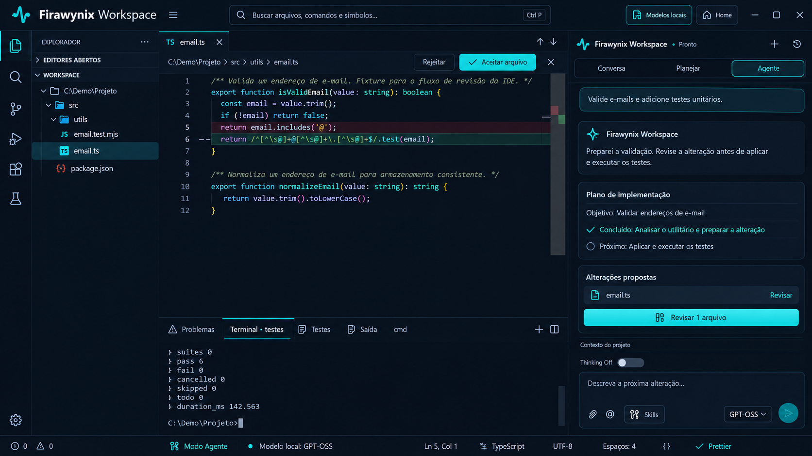

Editor e terminal
Abra seu projeto, edite arquivos e execute as ferramentas que você escolher.
APLICATIVO INDEPENDENTE / WINDOWS
Seu projeto, seu editor e suas alterações em um ambiente local.
Edite arquivos, use o terminal e revise mudanças no Windows. Trabalhe em português brasileiro ou inglês. Quando você configura um modelo compatível, os recursos opcionais de IA local podem ajudar a explorar e revisar o código.
Gratuito para Windows 10 e 11. A disponibilidade é informada na página da Microsoft Store.

O QUE VOCÊ ENCONTRA
Uma edição separada do Workspace para desenvolvimento em projetos locais.
Abra seu projeto, edite arquivos e execute as ferramentas que você escolher.
Examine alterações propostas antes de aplicá-las ao projeto.
Configure um modelo compatível para explorar e revisar código com recursos de IA.
FIRAW / IDE
O código desta edição pública está no GitHub FIRAWYNIX.